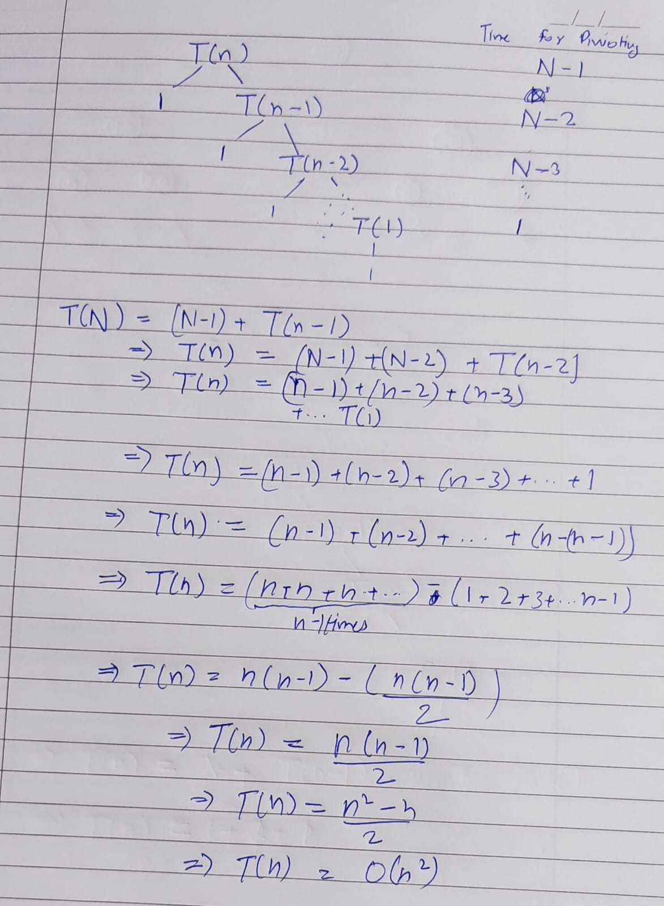

Q1
(a) Define Omega notation.
Omega notation (Ω) is used in computer science to describe the lower bound of an algorithm's running time. It provides a guarantee that the algorithm will take at least this amount of time to complete. For example, if an algorithm has a time complexity of Ω(n^2), it means that the execution time will not be less than a constant times n^2 for sufficiently large n.
For a function \(f(n)\), \(\Omega(g(n))\) represents an lower bound on its growth. This means that there exists a constant \(c > 0\) and an input size \(n_0\) such that \(f(n)\) is bounded bellow by \(c *g(n) \space \forall \space n \ge n_0\)
(b) Derive the worst case complexity of the quick sort algorithm.
Quick Sort is a divide-and-conquer algorithm. In the worst case, it occurs when the pivot element is the smallest or the largest element in the list, leading to unbalanced partitions. In such cases, the time complexity becomes \(O(n^2)\). However, with a good pivot selection method, like choosing the median, the average complexity can be \(O(n log n)\).

(c) State the general principle of greedy method.
The greedy method is an algorithmic approach that makes the best choice at each step as it attempts to find the global optimum. It follows the problem-solving heuristic of making the locally optimal choice at each stage with the hope of finding a global optimum. Greedy algorithms are known for their efficiency and are used in problems like the shortest path, minimum spanning tree, and Huffman coding
Overall, greedy algorithms can be a useful tool for solving certain types of problems efficiently, but they may not always provide the optimal solution. It is important to carefully analyze the problem and consider alternative approaches when using greedy algorithms.
Greedy(a, n) {
for i = 1 to n {
x = Select(a)
if feasible(x) {
solution = solution + x
}
}
}(d) Explain how reliability of a system is determined using dynamic programming?
Dynamic programming can be used to enhance system reliability by optimizing the redundancy and allocation of resources. The approach typically involves breaking down the reliability problem into smaller subproblems, solving each subproblem just once, and storing these solutions for future reference. The optimal solution of the larger problem is then constructed from these sub-solutions.
(e) Explain the Hamiltonian circuit problem with an example.
A Hamiltonian circuit is a path in a graph that visits each vertex exactly once and returns to the starting vertex. For example, in a graph of five vertices arranged in a pentagon, a Hamiltonian circuit would involve starting at one vertex and visiting each of the other four vertices once before returning to the starting vertex.
(note there maybe more than 1 Hamiltonian circuit in a graph or there maybe no Hamiltonian circuit)
(f) What is amortized analysis of algorithms and how is it different from asymptotic analysis?
Amortized analysis is a method used to average the time complexity of a sequence of operations in an algorithm over all the operations performed. It differs from asymptotic analysis, which describes the complexity in terms of the input size, often focusing on the worst-case scenario. Amortized analysis provides a more precise understanding of the algorithm's performance in practice.
(g) Formulate 8-queens problem.
he 8-Queens problem involves placing eight queens on an 8x8 chessboard such that no two queens threaten each other. The challenge is that no two queens can be in the same row, column, or diagonal. The problem is a classic example of the more general n-queens problem of placing n queens on an n×n chessboard.
(h) Discuss the importance of knapsack algorithm in our daily life?
The knapsack problem, where one must maximize the total value of items in a knapsack without exceeding its weight capacity, has practical applications in resource allocation, budget management, and logistics. In daily life, it can be used for decision-making in situations like selecting the most valuable items to pack for a trip within a limited space.
(i) Define Optimal binary search tree with an example.
n optimal binary search tree is a binary search tree where the nodes are arranged on levels such that the tree cost (the sum of the search costs of all elements) is minimized. For example, if you have nodes with different probabilities of being searched, arranging them in an optimal BST minimizes the total search cost.